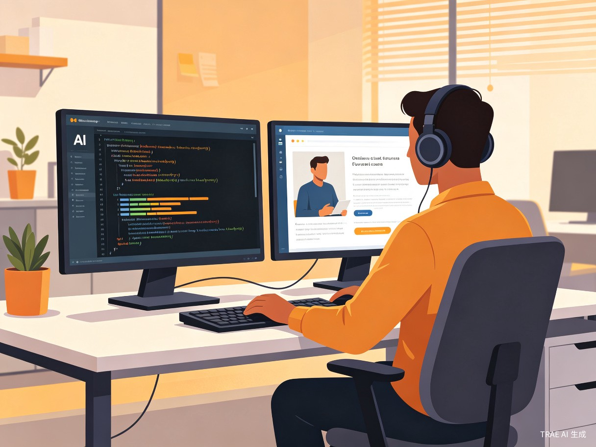
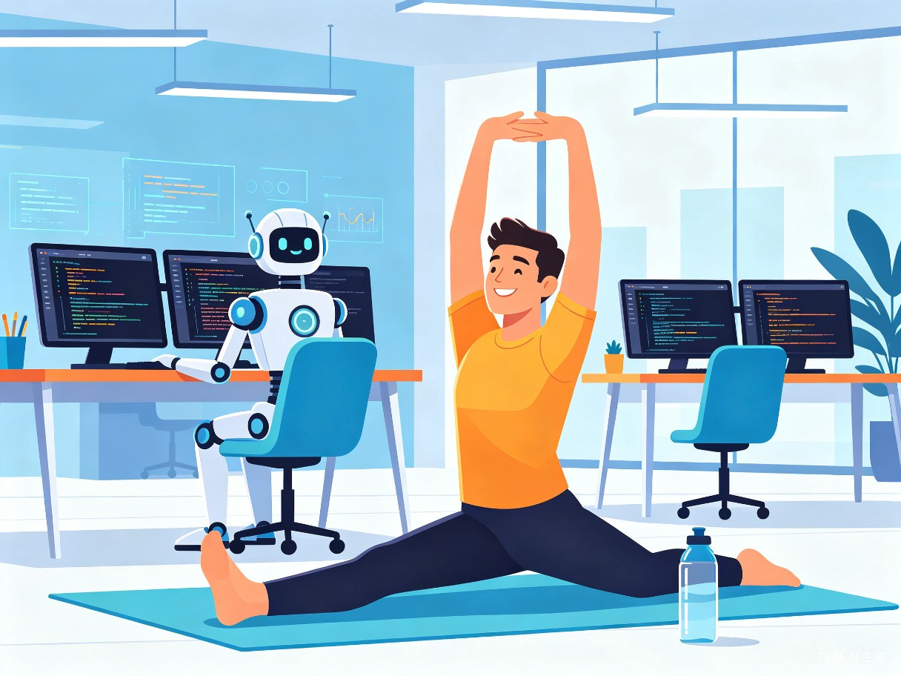
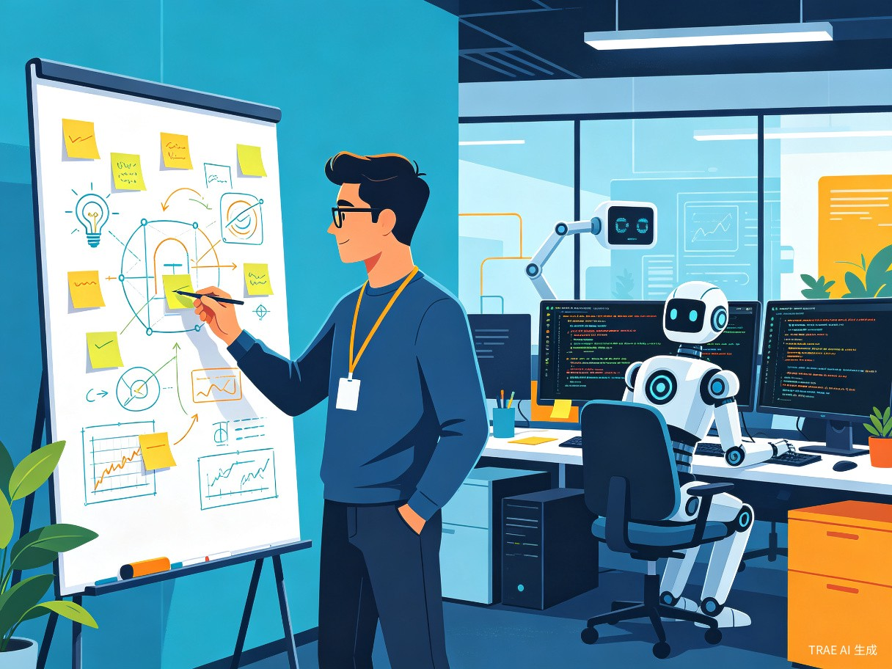
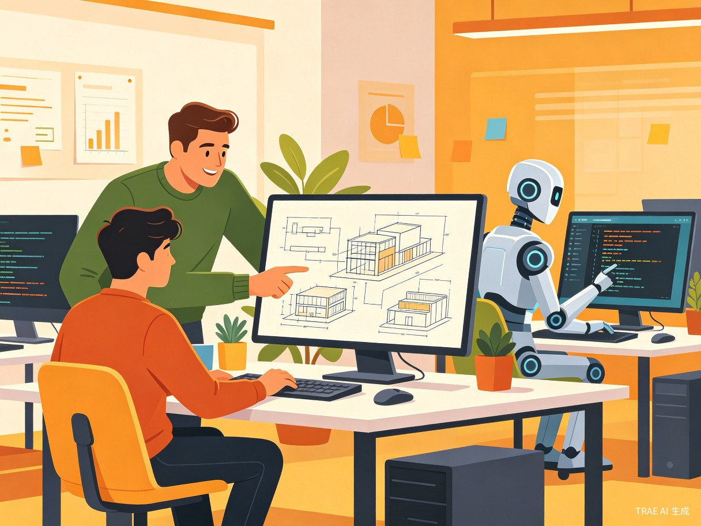

当 AI 正在生成代码，程序员不再是"等待者"，而是"进化者"。我们提出一套完整的方案，让 AI 编码的等待时间成为程序员自我提升的黄金窗口。
随着 AI 编程助手（如 TRAE、GitHub Copilot、Cursor 等）的普及，程序员日常工作中越来越多的代码生成任务交给了 AI。在 AI 生成代码的等待阶段，程序员往往处于"无事可做"的状态——只能摸鱼，既浪费了宝贵的工作时间，又无法体现自身价值，甚至面临被管理层"抓包"罚款的风险。
我们的创意方案旨在为程序员在 AI 生成代码期间提供结构化、可量化、有价值的活动建议系统，将"摸鱼时间"转化为"成长时间"，帮助程序员在 AI 时代重新定义自己的核心竞争力。
面向所有在日常工作中使用 AI 编程助手的程序员群体，覆盖前端、后端、全栈等各技术方向。
日常使用 AI 编程助手（TRAE、Copilot、Cursor 等）的软件开发者，包括初级、中级和高级工程师。
AI 正在生成代码、重构代码、编写测试用例或自动补全的等待阶段，通常持续 30 秒到 10 分钟不等。
等待期间缺乏有效引导，只能"摸鱼"，既浪费时间又无法提升技能，甚至面临管理考核压力。
AI 生成代码的等待时间通常在 30 秒到 10 分钟之间，时间碎片化严重，难以安排完整的学习任务。
没有系统化的"微任务"推荐机制，程序员不知道在短暂等待期内应该做什么才有价值。
即使利用等待时间做了有意义的事，也无法被量化和记录，无法在绩效评估中体现。
长时间盯着屏幕等待 AI 输出，眼睛疲劳加剧，久坐不动导致颈椎、腰椎问题日益严重。
我们设计了一套智能化的"AI 等待期任务推荐系统"，根据等待时长、项目上下文和个人成长目标，自动推荐最适合的微任务。
根据当前项目技术栈，智能推送 30 秒 ~ 5 分钟的微学习内容：API 文档速读、设计模式卡片、算法碎片练习等。让每一段等待都成为一次知识积累。
检测到 AI 生成时间超过 2 分钟时，推送桌面瑜伽、眼保健操、站立办公提醒等健康微任务。久坐提醒、喝水提醒、颈椎放松动画一应俱全。
提供快速笔记、灵感记录、架构草图绘制等轻量工具，让程序员在等待期间捕捉转瞬即逝的创意想法，积累个人知识库。
推荐代码审查任务、技术分享准备、新人指导等协作微任务，将个人等待时间转化为团队价值输出。
以下四个典型场景展示了程序员如何在 AI 生成代码的不同等待阶段，高效利用碎片时间创造价值。
AI 正在为一个复杂的 React 组件生成代码，预计需要 3 分钟。系统检测到当前项目使用了 React 18，自动推送一张"React Server Components 速览卡片"，程序员在等待期间快速了解了新特性，为后续代码审查打下基础。

AI 正在批量生成单元测试用例，预计需要 8 分钟。系统弹出"桌面瑜伽 5 分钟"引导动画，程序员跟随动画做了颈部旋转、肩部放松和手腕伸展。等待结束时，AI 测试已就绪，程序员精力充沛地开始审查。

AI 正在重构一段遗留代码，预计需要 6 分钟。系统打开"创意捕获器"快速笔记面板，程序员随手记录了关于微服务拆分的新想法，并画了一个简单的架构草图。这个灵感后来成为了团队 Q3 的技术改进方案。

AI 正在生成 API 文档，预计需要 4 分钟。系统推荐了 3 个待审查的 Pull Request，程序员利用等待时间完成了 2 个 PR 的代码审查并留下了建设性意见。团队代码合并效率提升了 40%。

本方案不仅解决程序员的个人痛点，更在商业效率、团队协作和职业发展三个维度产生可量化的价值。
| 价值维度 | 具体体现 | 预期效果 |
|---|---|---|
| 商业价值 | 将 AI 等待时间转化为有效产出，提高整体工作效率 | 每日节省 1.5 小时无效等待时间，提升团队产能 20%+ |
| 节能增效 | 减少低效摸鱼行为，优化人力资源配置 | 降低人力浪费率 35%，人均产出提升显著 |
| 技能成长 | 利用碎片时间进行微学习，持续积累技术深度 | 每月额外积累 15+ 小时有效学习时间 |
| 健康关怀 | 定时健康提醒，预防职业病 | 减少久坐相关疾病发病率，提升工作幸福感 |
| 团队协作 | 促进代码审查、知识分享等团队行为 | 代码审查覆盖率提升 40%，团队凝聚力增强 |
| 创新驱动 | 捕获碎片化灵感，形成创新知识库 | 每季度产出可落地的技术改进方案 3-5 个 |
我们采用敏捷迭代策略，分三个阶段逐步实现完整的产品愿景。
开发 IDE 插件核心框架，实现 AI 等待时间检测和基础微学习卡片推送功能。支持 VS Code 和 JetBrains IDE，覆盖前端和后端主流技术栈。内置 200+ 张技术速览卡片。
加入健康提醒系统、创意捕获器和团队协作桥模块。实现个人学习数据看板，支持自定义微任务模板。与主流项目管理工具（Jira、飞书）集成。
引入 AI 推荐引擎，根据用户行为数据智能优化任务推荐。开放插件市场，支持社区贡献微学习内容。推出团队版，支持管理员配置和组织级数据统计。
AI 时代，程序员的进化从利用好每一段等待时间开始。加入我们，一起重新定义"AI 工作时我们可以做什么"。
回到顶部查看完整方案